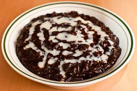

Champorado Recipe

Description
Champorado is a sweet chocolate rice porridge that uses sweet glutinous rice
(locally known as malagkit) and cocoa powder as main ingredients. A more
traditional approach would be using tableya (pure cocoa blocks) instead of
cocoa powder.
This porridge can be served hot or cold and is mostly eaten during breakfast.
This can also be served during mid-afternoon snacks (meryenda) and is best when
complimented with Tuyo (salted dried fish).
Ingredients
- 8 tbsp cocoa powder or about 4 pieces tableya
- 1 cup glutinous rice malagkit
- 1/2 cup sugar
- 3 1/2 cups water
- condensed milk optional
Steps
- Pour 2 1/2 cups of water in a pot and bring to a boil.
- Put-in the glutinous rice and allow water to re-boil for a few minutes.
- Dilute the cocoa powder in 1 cup warm water then pour-in the pot. Stir continuously.
- Once the glutinous rice is cooked (about 12 to 18 minutes of cooking with constant stirring), add the sugar and cook for another 5 minutes or until the texture becomes thick..
- Remove from the pot and place in a serving bowl.
- Serve hot with a swirl of condensed milk on top.
Home